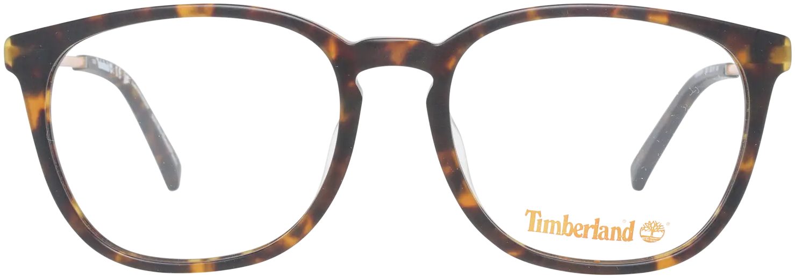
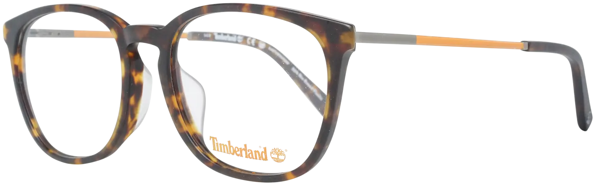
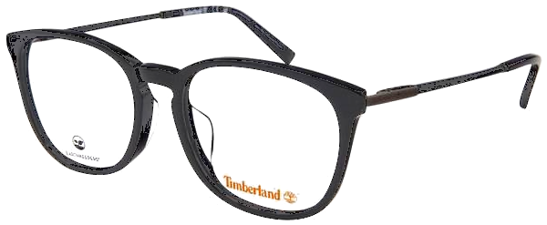
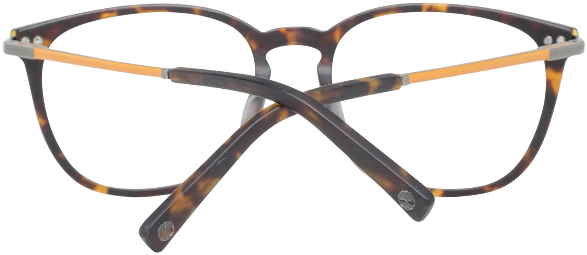

NEW IN STORE
TIMBERLAND
TB1670-F
052 · Brown
Spring hinge
Full rim
55 · 19 · 145
TWO COLOURWAYS
ONE FRAME
052 · Brown
001 · Black
THE LENS
ZEISS PHOTOFUSION X
Sunglass-dark outdoors
UV protection up to 400 nm, clear or dark
DuraVision Plus Platinum UV
NEW IN STORE
TIMBERLAND TB1670-F · 052 / 001